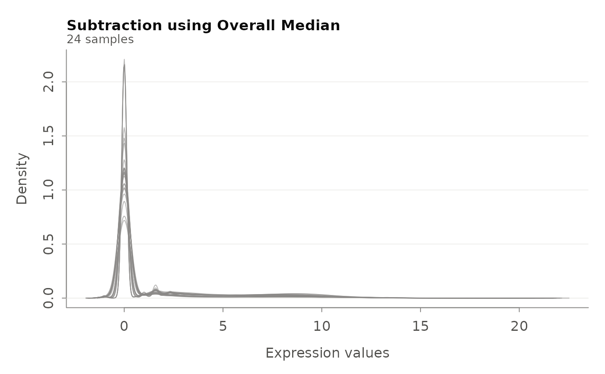

Subtract reference group median from expression data (relative expression)
Source:R/preprocessing.R
control_subtraction.RdThis function converts expression into relative (differential) expression by
subtracting the per-gene median of a reference group from every sample. The
distributed _diff clocks are relative models trained on
reference-centred expression, so this centring must always be applied before
predicting with them.
Arguments
- eset
An ExpressionSet object containing expression data.
- column_name
Character string specifying the column name in phenoData that contains the group labels. Default
NULL(centre on all samples).- control_label
Character string specifying the label for control samples. Default
NULL(centre on all samples).- verbose
Logical indicating whether to print progress messages and create density plots. Default is TRUE.
Details
If no reference group is specified (both column_name and
control_label are NULL), or no matching control samples are
found, all samples are used as the reference (per-gene overall median). This
matches the default behaviour of the TACO reference application, which always
centres and defaults the reference group to all samples.
Examples
# Load example data and create ExpressionSet
expr_data <- load_example_expression_data()
meta_data <- load_example_metadata()
eset <- make_ExpressionSet(expr_data, meta_data)
#> ✓ ExpressionSet created successfully
#> - Number of genes: 57010
#> - Number of samples: 24
 # Subtract control group (assuming 'Group' column has 'Control' label)
control_eset <- control_subtraction(eset, "Group", "Control", verbose = TRUE)
#> ✓ No control samples found for label 'Control'. Centring on all samples (overall median).
#> Warning: NaNs produced
# Subtract control group (assuming 'Group' column has 'Control' label)
control_eset <- control_subtraction(eset, "Group", "Control", verbose = TRUE)
#> ✓ No control samples found for label 'Control'. Centring on all samples (overall median).
#> Warning: NaNs produced
